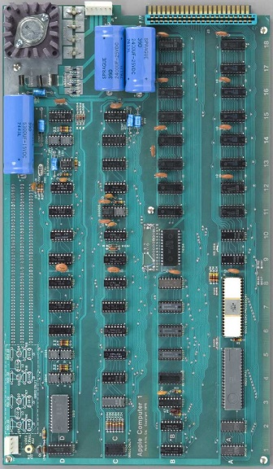

Hackerii si "phreakerii"(phone + freak, impatimiti ai sistemelor telefonice) americani gasisera metode de a folosi telefoanele pentru convorbiri interurbane gratuite, reproducand tonurile care transmiteau semnalele retelei AT&T. Aceasta 'cutie albastra' folosea sunetul emis de o fluierita de jucarie (identic cu tonul de 2600Hz folosit de retelele telefonice) pentru a pacali sistemul, permitand realizarea unei convorbiri telefonice interurbane, fara taxare.
Steve Jobs si Stephen Wozniak au fost foarte entuziasmati de ideea Blue Boxului asa ca s-au folosit de cunostiintele de electronica ale lui Woz si de proiectele lui Steve de la Clubul Exploratorilor HP pentru a construi o versiune digitala a Cutiei Albastre.
La inceput, aceasta a fost folosita pentru diverse feste, cea mai indrazneata dintre acestea fiind atunci cand au sunat la Vatican, iar Wozniak a cerut sa vorbeasca cu papa. Steve a realizat ca acest dispozitiv poate fi mai mult decat un hobby si a decis sa creeze mai multe dispozitive si sa le vanda, tipar ce avea sa se repete.
Daca nu ar fi fost Cutiile Albastre, Apple nu ar fi existat. Sunt 100% sigur de asta. Eu si cu Woz am invatat cum sa lucram impreuna si am devenit increzatori in capacitatea noastra de a rezolva probleme tehnice si de a produce ceva.- Steve Jobs
Apple I
|  |
Anul 1975 a fost marcat de aparitia primului kit al unui computer personal, Altair (o simpla gramada de piese in valoare de 495$, care trebuiau lipite pe o placa si cu care nu se putea face prea multe. Bill Gates si Paul Allen au inceput sa lucreze la limbajul BASIC, destinat computerului Altair. Aceasta masinarie le-a atras atentia lui Jobs si Wozniak. Woz proiectase un terminal, cu tastatura si monitor, care se putea conecta la un minicomputer aflat la distanta. La finalul asamblarii, Woz a inceput sa scrie software-ul care facea microprocesorul sa afiseze imaginile pe monitor. Am apasat cateva taste de pe tastatura si am ramas socat! Literele aparusera pe monitor!- Wozniak, 1975 Jobs a fost impresionat, asaltandu-l pe Woz cu intrebari. Acesta a reusit sa obtina cipuri de RAM dinamic de la Intel, gratis. Steve a avut ideea ca cei doi sa construiasca si sa vinda placi de baza. El era cel care reusea sa scoata bani din lucrurile construite alaturi de Woz. Au reusit sa faca rost de piese pentru a crea mai multe placi de baza facand sacrificii. Jobs si-a vandut Volkswagenul iar Woz si-a vandut calculatorul HP 65. Intr-un final, cei doi aveau o companie, lucru foarte incitant pentru amandoi, cu un capital de 1300$. |
Un pachet integrat
Steve Jobs si-a dat seama ca problema calculatorului Apple I este ca nu era destinat utilizatorilor de rand, oamenilor comuni. A realizat ca este nevoie de un pachet integrat astfel ca a decis ca urmatorul Apple sa aiba o carcasa grozava, o tastatura incorporata si sa fie integrat de la un capat la altul, de la sursa de alimentare pana la software.
Nu ne mai adresam unor amatori, carora le placea sa isi asambleze propriile computere, care stiau cum sa cumpere transformatoare si tastaturi. Pentru fiecare dintre acestia existau o mie de oameni care si-ar fi dorit ca aparatul sa fie gata sa functioneze- Steve Jobs
Pentru ca un astfel de proiect sa fie realizat, era necesar un capital considerabil, astfel, Steve s-a gandit sa vanda drepturi din compania Apple altor companii, mai mari. Cand a fost primit la Atari, pentru o prezentare, Steve Jobs a fost refuzat din cauza igienii sale. Mark Markkula a fost cel ce i-a ajutat financiar pe cei doi si pe 3 ianuarie 1977 a fost infiintata oficial compania Apple Computer Co. Markkula l-a invatat pe Jobs strategii de marketing si vanzari.
Primul eveniment de lansare
Prezentarea Apple II a avut loc in aprilie 1977 la Targul de Computere de pe Coasta de Vest. Pentru eveniment, Jobs si Wozniak au fost supusi unei schimbari de imagine.
Markkula ne-a explicat ca va trebui sa ne imbracam frumos, ne-a sfatuit cum sa aratam si cum sa ne comportam- S.Wozniak
Eforturile le-au fost rasplatite. Cu carcasa sa bej eleganta, Apple II parea solid, insa prietenos, spre deosebire de masinariile placate cu metal si de placile de circuite neasamblate, aflate pe celelalte mese. Apple a primit 300 de comenzi la acest eveniment, iar Jobs a cunoscut un producator japonez de textile, care a devenit primul distribuitor Apple in Japonia.